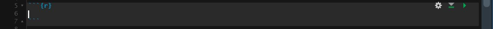
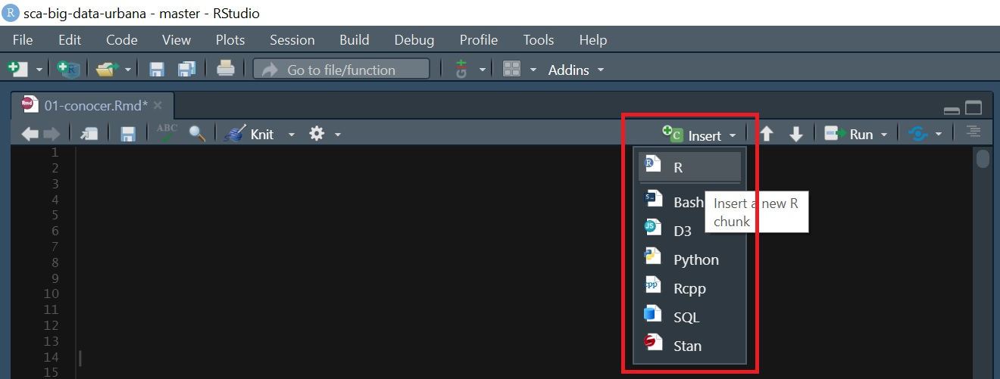

Clase 1 CONOCER
A lo largo del curso trabajaremos con el formato RMarkdown, un tipo de documento de RStudio que integra texto con código de R.
Empecemos de a poco:
Primero tenemos que crear un nuevo proyecto y un nuevo RMarkdown. Los pasos a seguir pueden encontrarlos en el siguiente tutorial: https://rpubs.com/angiescetta/conociendo-R
Ahora si, comencemos!
¿Para que sirve el formato RMawkdown?
Este formato sirve para manipular datos y armar informes listos para presentar. Hay 2 formas de escribir en un RMarkdown:
Texto como el que estoy escribiendo ahora.
Bloques de código (o “chunks”) donde insertaremos nuestras líneas de código con el objetivo de manipular (analizar, modificar, visualizar) los datos. Esto es un chunk:

Y se inserta haciendo click en Insert/R o con el siguiente atajo en el teclado: Ctrl + Shift + I

Carguemos nuestro primer dataset
A lo largo del curso vamos a trabajar con los datos de Properati, un portal web de compra, venta y alquiler de inmuebles en toda América Latina. Estos datos son públicos y pueden encontrarlos en https://properati.com.ar/data.
En este caso, para facilitar la manipulación de la información, usaremos un set de datos (en formato csv) previamente procesado que contiene datos de propiedades publicadas en AMBA en Junio y Julio del 2020. Pueden descargarlo de https://data.world/angie-scetta/amba-properati.
Recomendación: Al descargarlo, moverlo de la carpeta “Descargas” a la carpeta del Proyecto donde estén trabajando.
Ahora si, manos a la obra! Para cargar el dataset pueden copiar la siguiente línea de código y pegarla dentro de un chunk:
Para entender la lógica detrás del chunk anterior pueden revisar este link: https://rpubs.com/angiescetta/importar-dataset
Ahora exploremos nuestro dataset, veamos como se estructura (cuantas filas y columnas tiene) y que información trae…
Para esto empezaremos utilizando dim():
## [1] 14929 13Podemos ver que tenemos 14.929 registros/filas y 13 columnas. También podríamos ver esto por separado de la siguiente forma:
## [1] 13## [1] 14929Pero ¿qué contienen esas 13 columnas? Esto podemos verlo con names():
## [1] "created_on" "provincia" "partido"
## [4] "rooms" "surface_total" "surface_covered"
## [7] "price" "currency" "title"
## [10] "property_type" "operation_type" "lat"
## [13] "long"Bien, las columnas tienen fecha de publicación de la propiedad, provincia y partido donde se ubica, cantidad de ambientes, superficie total y superficie cubierta, precio publicado, tipo de moneda (ARS o USD), el título que el usuario escribió al publicar su propiedad, el tipo de propiedad, el tipo de operación, y finalmente la ubicación del inmueble con sus coordenadas: latitud y longitud.
Parece que cada fila/registro de la base corresponde a una propiedad publicada, pero veamos una pequeña muestra de la data con head() para estar seguros:
## created_on provincia partido rooms surface_total surface_covered
## 1 202006 CABA Comuna 7 1 40 37
## 2 202006 CABA Comuna 13 1 30 30
## 3 202006 CABA Comuna 13 1 31 29
## 4 202006 CABA Comuna 1 1 35 35
## 5 202006 GBA Vicente López 1 36 27
## 6 202006 GBA La Matanza 2 24 24
## price currency
## 1 22500 ARS
## 2 18000 ARS
## 3 17900 ARS
## 4 42000 ARS
## 5 19000 ARS
## 6 12000 ARS
## title
## 1 Departamento - Flores
## 2 Retasado! Monoambiente en Nuñez, excelente ubicación!
## 3 Departamento - Belgrano
## 4 Monoambiente con cochera. Zencity. Puerto Madero
## 5 Alquiler TORRE dpto de 1o2 ambientes - excelente luz y vista cochera optativa
## 6 PH - Lomas Del Mirador
## property_type operation_type lat long
## 1 Departamento Alquiler -58.46222 -34.61917
## 2 Departamento Alquiler -58.46652 -34.55460
## 3 Departamento Alquiler -58.46461 -34.56318
## 4 Departamento Alquiler -58.36090 -34.61836
## 5 Departamento Alquiler -58.49345 -34.53344
## 6 PH Alquiler -58.52914 -34.66253Y un resumen estadístico de la información:
## created_on provincia partido rooms
## Min. :202006 CABA:8896 Comuna 14:2001 Min. : 1.000
## 1st Qu.:202006 GBA :6033 Tigre :1222 1st Qu.: 2.000
## Median :202006 Comuna 13:1193 Median : 3.000
## Mean :202006 Comuna 15:1077 Mean : 3.057
## 3rd Qu.:202007 Comuna 2 : 853 3rd Qu.: 4.000
## Max. :202007 Comuna 1 : 765 Max. :10.000
## (Other) :7818
## surface_total surface_covered price currency
## Min. : 10 Min. : 10.00 Min. : 10000 ARS: 3251
## 1st Qu.: 51 1st Qu.: 46.00 1st Qu.: 72000 USD:11678
## Median : 75 Median : 66.00 Median : 140000
## Mean : 117 Mean : 91.98 Mean : 206342
## 3rd Qu.: 130 3rd Qu.:108.00 3rd Qu.: 250000
## Max. :5000 Max. :882.00 Max. :3000000
##
## title
## Departamento de 2 ambientes en Venta en Villa crespo: 182
## Departamento de 2 ambientes en Venta en Almagro : 124
## Departamento de 2 ambientes en Venta en Palermo : 124
## Departamento de 3 ambientes en Venta en Villa crespo: 121
## Departamento de 3 ambientes en Venta en Almagro : 108
## Departamento de 3 ambientes en Venta en Palermo : 108
## (Other) :14162
## property_type operation_type lat long
## Casa : 2297 Alquiler: 3251 Min. :-59.04 Min. :-35.12
## Departamento:11344 Venta :11678 1st Qu.:-58.53 1st Qu.:-34.61
## PH : 1288 Median :-58.45 Median :-34.59
## Mean :-58.47 Mean :-34.59
## 3rd Qu.:-58.41 3rd Qu.:-34.55
## Max. :-57.83 Max. :-34.26
## A priori, en este resumen podemos entender varias cosas de la data. Por ejemplo:
Hay registros de propiedades publicadas entre Junio (Min) y Julio (Max) 2020
La mayoría de las publicaciones son en CABA (8.896 vs 6.033)
El Partido/Comuna que más aparece es la Comuna 14 (Barrio de Palermo), seguido por Tigre.
De las 3 tipologías de propiedades, lo que más hay es Departamentos, seguido por Casas y por último PHs.
Hay más propiedades en Venta que en Alquiler (11.678 vs 3.251)
Por último, investiguemos como es la estructura de la data, es decir que tipo de información tiene cada campo. Si bien algo ya nos imaginamos gracias al summary(), usemos str() para revisarlo:
## 'data.frame': 14929 obs. of 13 variables:
## $ created_on : int 202006 202006 202006 202006 202006 202006 202006 202006 202006 202006 ...
## $ provincia : Factor w/ 2 levels "CABA","GBA": 1 1 1 1 2 2 2 1 1 1 ...
## $ partido : Factor w/ 50 levels "Almirante Brown",..: 18 10 10 6 50 31 27 10 10 6 ...
## $ rooms : int 1 1 1 1 1 2 2 2 2 2 ...
## $ surface_total : int 40 30 31 35 36 24 40 60 53 39 ...
## $ surface_covered: int 37 30 29 35 27 24 40 50 44 34 ...
## $ price : int 22500 18000 17900 42000 19000 12000 15000 32000 26000 14000 ...
## $ currency : Factor w/ 2 levels "ARS","USD": 1 1 1 1 1 1 1 1 1 1 ...
## $ title : Factor w/ 10634 levels "- Casa Venta Tipo Chalet 5 Amb con Cochera - Villa Pueyrredo",..: 2864 8265 2810 7014 1091 7646 7622 4885 8682 2741 ...
## $ property_type : Factor w/ 3 levels "Casa","Departamento",..: 2 2 2 2 2 3 3 2 2 2 ...
## $ operation_type : Factor w/ 2 levels "Alquiler","Venta": 1 1 1 1 1 1 1 1 1 1 ...
## $ lat : num -58.5 -58.5 -58.5 -58.4 -58.5 ...
## $ long : num -34.6 -34.6 -34.6 -34.6 -34.5 ...Existen varios tipos de datos, pero en nuestro set nos encontramos con 3: integer (int), numeric (num) y Factor.
Ahora bien, ¿Qué significa eso?
Integer son números enteros, es decir que el campo solo admite números sin decimales como por ejemplo cantidad de habitaciones de una propiedad.
Numeric son números con decimales, como por ejemplo, latitud y longitud.
Factor son categorías, por ejemplo Barrios, Partidos, Tipos de propiedades, etc.
Además del tipo de dato, con str() también podemos ver la cantidad de niveles que tienen las variables de tipo Factor. Por ejemplo, se observa que la columna provincia solo tiene 2 categorías posibles (CABA o AMBA), en cambio la columna partido tiene 50.
Próximos Pasos
Acá concluye la primer clase, pero los invito a que repliquen lo realizado en clase con algún otro dataset que les interese. Pueden descargar datos de diversos portales abiertos como por ejemplo:
Portal de Datos Abiertos de Argentina: https://datos.gob.ar/
Portal de Datos Abiertos de CABA: https://data.buenosaires.gob.ar/
Portal de Datos Abiertos de PBA: https://catalogo.datos.gba.gob.ar/
O de cualquier otro portal de datos que conozcan o encuentren!